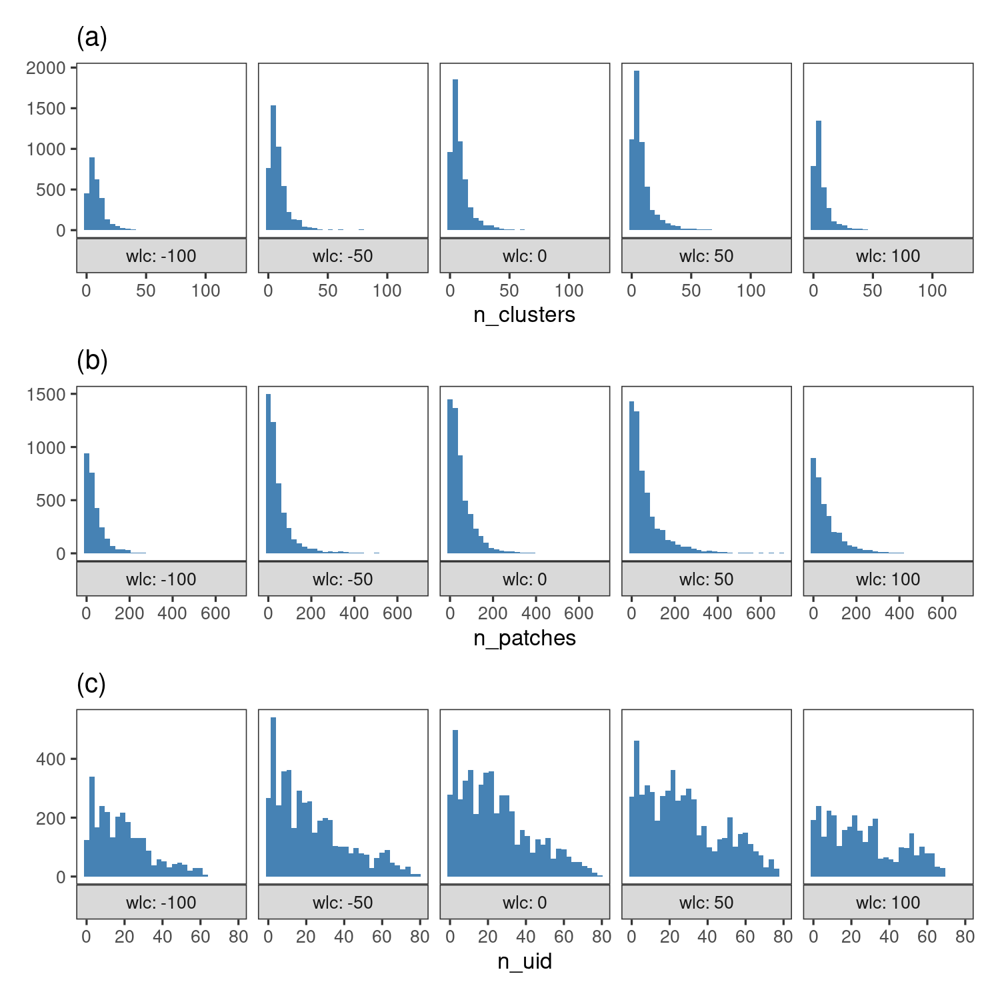
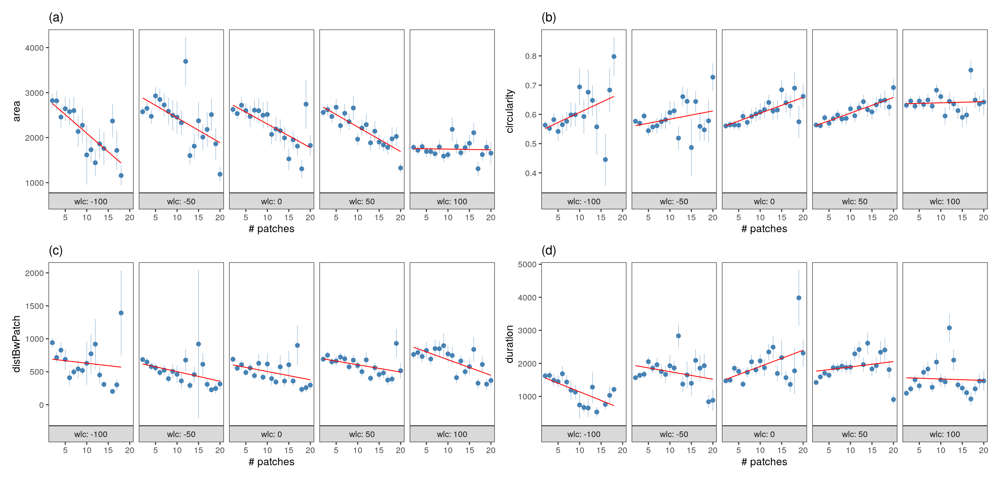

Section 9 Patch metrics in relation to module size
9.1 Prepare libraries
9.2 Read in module data
# read in data
modules <- read_csv("data/data_2018_patch_modules_small_scale.csv")
data <- read_csv("data/data_2018_good_patches.csv")Choose the smallest spatial scale.
9.3 Add patch data
# get mean and ci for patches
mod_data <- modules %>%
inner_join(data)
# count unique ids in each mod-time-chunk and filter on 2
mod_data <- mod_data %>%
group_by(spatial_scale, module, time_chunk) %>%
mutate(xc = mean(x_mean, na.rm = T),
yc = mean(y_mean, na.rm = T),
wlc = mean(waterlevel_start),
wlc = plyr::round_any(wlc, 25),
n_uid = length(unique(id)),
n_patches = length(unique(x_mean)))Filter for minimum 2 indiviudals per module, and minimum of 3 patches.
9.4 Visualise modules
# select single time chunk
a = ggplot()+
geom_point(data = mod_data %>%
filter(between(time_chunk, 700, 750)) %>%
distinct(x_mean, y_mean, .keep_all = T),
aes(x_mean, y_mean,
# fill = duration,
# col = factor(spatial_scale),
size = area),
shape = 1,
col = "grey20",
alpha = 0.5,
stroke = 0.15)+
geom_segment(data = mod_data %>%
filter(between(time_chunk, 700, 750)),
aes(x_mean, y_mean,
xend = xc, yend = yc,
col = factor(spatial_scale)),
size = 0.2,
alpha = 0.8,
show.legend = FALSE)+
# scale_fill_distiller(palette = "Reds")+
scale_colour_brewer(palette = "Set1")+
coord_sf(crs = 32631)+
# facet_wrap(~time_chunk)+
theme(axis.text = element_blank())
figplotly <- ggplotly(a)
saveWidget(figplotly, file = "fig_modules.html")9.5 Module size and composition ~ waterlevel
How does the number of patches and number of ids change with waterlevel?
# prep data to do stuff
mods_waterlevel <- mod_data %>%
ungroup() %>%
pivot_longer(cols = c("n_patches", "n_uid"))
# svae fig
fig_mods_waterlevel <-
ggplot(mods_waterlevel,
aes(value))+
geom_histogram(fill = "steelblue")+
# geom_pointrange(size = 0.2, col = "steelblue")+
theme_test()+
facet_grid(wlc~name,
as.table = F,
switch = "both",
labeller = label_both)+
xlim(0, 20)+
labs(x = NULL,
y = NULL)
ggsave(fig_mods_waterlevel,
filename = "figs/fig_mods_waterlevel.png",
device = png(), dpi = 300, height = 5, width = 3)
9.6 Patch size ~ number of patches in a module
Reload the data.
# get mean and ci for patches
mod_data <- modules %>%
inner_join(data)
# count unique ids in each mod-time-chunk and filter on 2
mod_data <- mod_data %>%
group_by(spatial_scale, module, time_chunk) %>%
mutate(xc = mean(x_mean, na.rm = T),
yc = mean(y_mean, na.rm = T),
wlc = mean(waterlevel_start),
wlc = plyr::round_any(wlc, 50),
n_uid = length(unique(id)),
n_patches = length(unique(x_mean)))# count patches in module, and get mean patch area, duration, circ
# summarise data
mod_data_summary <- mod_data %>%
group_by(wlc, n_patches) %>%
# summarise_at(vars(area, duration, circularity, distBwPatch),
# list(~mean(., na.rm = T))) %>%
pivot_longer(cols = c("area", "duration",
"circularity", "distBwPatch")) %>%
drop_na() %>%
group_by(wlc, n_patches, name) %>%
summarise_at(vars(value),
list(~mean(., na.rm = T),
~ci(.)))
# remove data above the 95% percentile
quantile(mod_data_summary$n_patches, probs = c(0.05, 0.90))
# get by n patch
mod_data_summary <- mod_data_summary %>%
filter(n_patches <= 20)
# make list
mod_data_summary <- split(mod_data_summary, mod_data_summary$name)